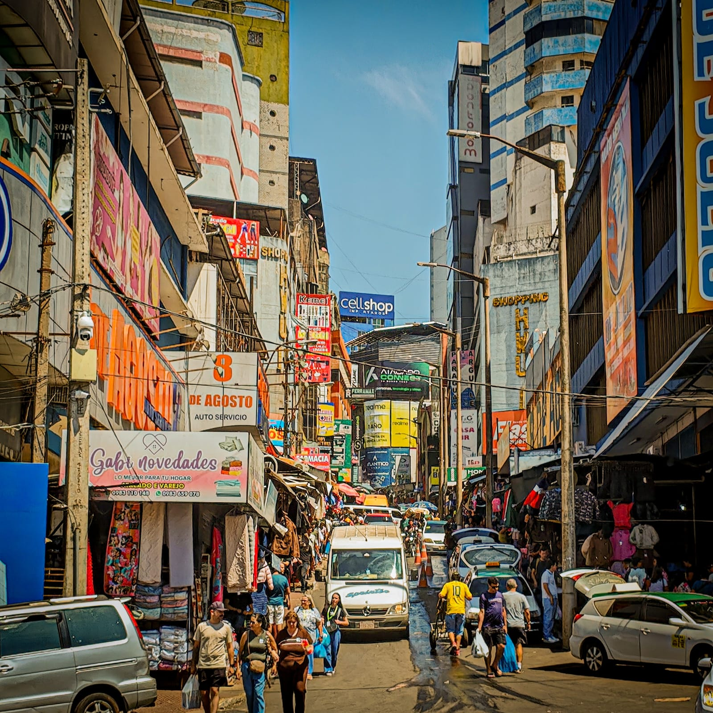
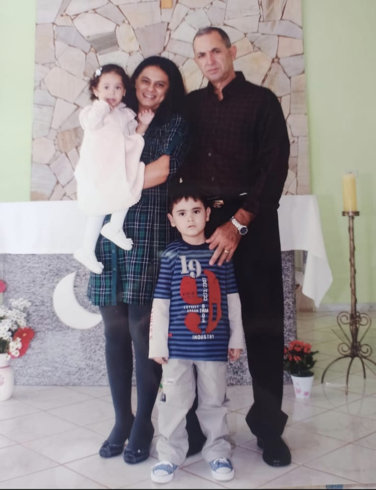
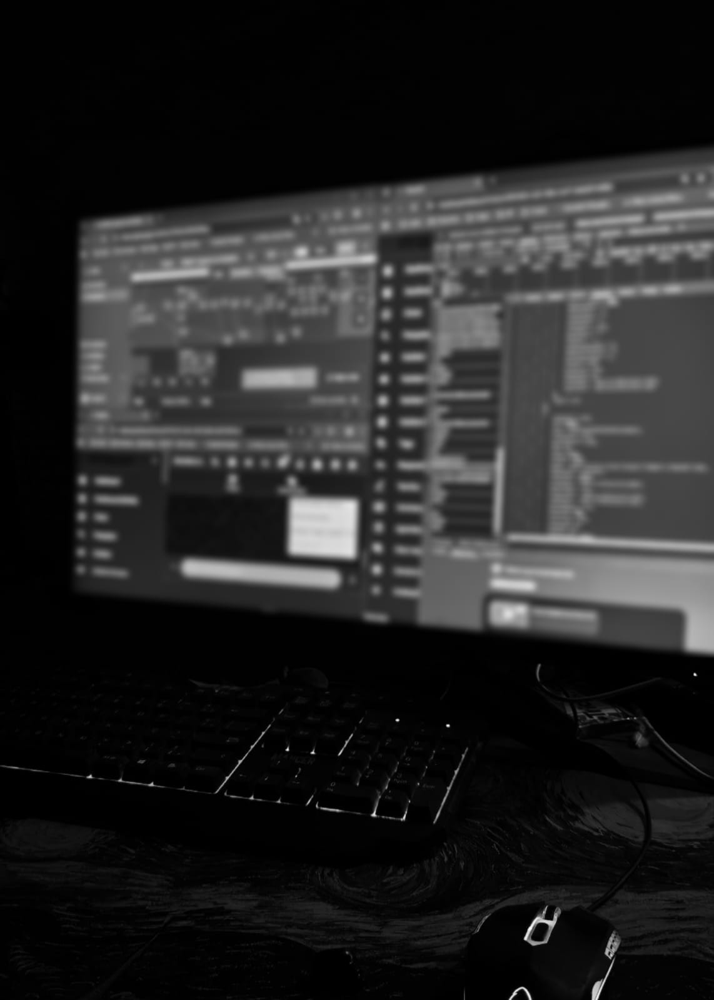

Liberdade
Quando penso no meu futuro, um dos meus maiores sonhos é conseguir construir algo que me permita alcançar a minha liberdade. Para mim, isso não significa simplesmente ganhar muito dinheiro ou ter uma empresa de sucesso. É claro que a liberdade financeira faz parte disso, mas o que eu realmente busco vai além.
Eu quero chegar a um ponto da minha vida em que tenha mais liberdade para decidir o que fazer com o meu tempo e com a minha própria vida. Quero poder escolher meus caminhos, viver novas experiências e aproveitar as oportunidades que aparecerem, sem sentir que estou preso a uma rotina que não me permite fazer aquilo que realmente quero.
Conhecer o mundo
Um dos meus maiores desejos é conhecer diferentes lugares e ter contato com outras culturas. Quero poder viajar, conhecer pessoas, experimentar coisas novas e descobrir como é o mundo além dos lugares que já conheço. Mas eu não quero viver tudo isso sozinho.
Para mim, vencer na vida sozinho não teria o mesmo significado. Quero poder compartilhar as minhas conquistas e experiências com as pessoas que amo e que considero importantes para mim. Quero viajar, conhecer novos lugares e criar memórias ao lado delas.
Crescer junto com quem eu amo
Também acredito que, se um dia eu alcançar o sucesso, não quero pensar apenas em mim. Uma das coisas que gostaria de fazer é ajudar e incentivar as pessoas que fazem parte da minha vida para que elas também possam crescer e conquistar os próprios objetivos.
Tecnologia é o caminho?
Acredito que criar algo próprio, desenvolver projetos e automatizar processos podem ser caminhos para alcançar esse sonho. Tenho interesse principalmente pela área de tecnologia e gostaria de continuar aprendendo, adquirindo experiência e, no futuro, utilizar esse conhecimento para construir algo que possa me proporcionar novas oportunidades.
O verdadeiro sucesso pra mim
Meu sonho é construir uma vida em que eu tenha liberdade para viver novas experiências, conhecer o mundo, estar ao lado das pessoas que amo e também ajudar outras pessoas a crescerem junto comigo.
Para mim, o verdadeiro sucesso não seria apenas conquistar algo sozinho. Seria olhar para trás e perceber que consegui construir uma vida da qual tenho orgulho, viver experiências que sempre quis viver e, principalmente, compartilhar tudo isso com as pessoas que considero importantes.
Se eu conseguir alcançar isso um dia, acredito que não estarei apenas realizando um objetivo profissional ou financeiro1. Estarei vivendo a vida que sempre imaginei para mim.
1 Objetivo de longo prazo, sem prazo fixo definido.
Galeria


